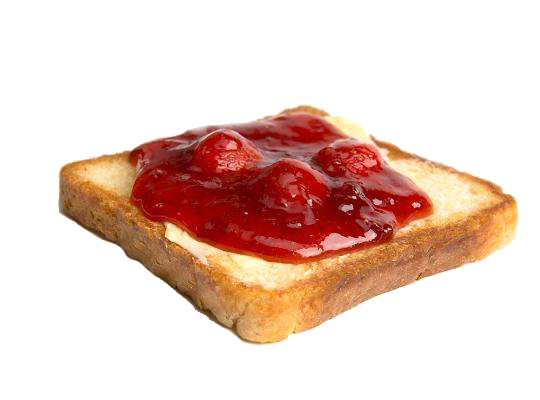
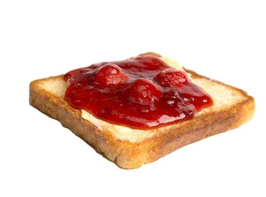

Claire Elise Boucher, known professionally as Grimes, is a Canadian musician, singer, songwriter, and record producer. She is often associated with her husband Elon Musk. This website works in accordance with her diet during her pregnancy to her child X Æ A-Xii. In the video, one can observe how picky of an eater she is and the interesting things that she consumes. Take a guess and drag and drop the food items in the order that she eats them throughout the day, and then press submit to see a reference sheet!
 
